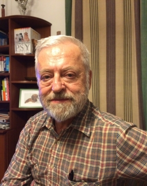
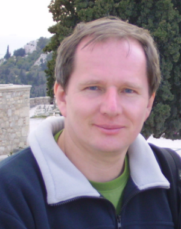
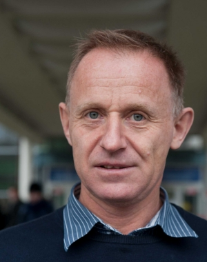

O autorach książki

Kazimierz Rzążewski
Urodzony w 1943 roku w Warszawie, profesor fizyki w Centrum Fizyki Teoretycznej Polskiej Akademii Nauk, zajmuje się mechaniką i optyką kwantową oraz fizyką statystyczną gazów kwantowych. Jest autorem ponad 200 prac naukowych, laureatem Nagrody Fundacji Humboldta, wybieralnym członkiem Brytyjskiego i Amerykańskiego Towarzystwa Fizycznego. Pracował na uniwersytetach amerykańskich oraz niemieckich. Wraz z Leslie Allenem i Josephem Eberlym napisał monografię Rezonans optyczny wydaną przez PWN. W roku 2013 otrzymał nagrodę Galileusza przyznana przez Międzynarodową Komisję Optyki. W 2015 roku otrzymał nagrodę Fundacji Nauki Polskiej. Od lat wygłasza seminaria na temat systemów wyborczych.

Wojciech Słomczyński
Urodzony w 1962 roku w Krakowie, matematyk, związany z Instytutem Matematyki i Centrum Badań Ilościowych nad Polityką Uniwersytetu Jagiellońskiego. Bada chaos, entropię i fraktale. Jego zainteresowania naukowe obejmują także różnorodne zastosowania matematyki, od fizyki kwantowej, poprzez biologię, ekonomię, politologię, do historii sztuki. Wraz z Karolem Życzkowskim byli autorami Kompromisu Jagiellońskiego, systemu głosowania w Radzie Unii Europejskiej, stanowiącego w latach 2003-2007 przedmiot intensywnych dyskusji naukowców, polityków i mediów. W roku 2017 przedstawial w Parlamencie Europejskim w Brukseli briefing omawiajacy proponowany system podzialu miejsc w PE pomiedzy kraje czlonkowskie Unii.
